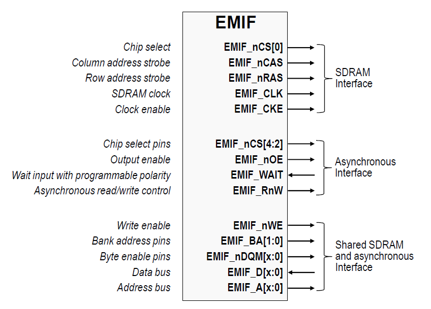
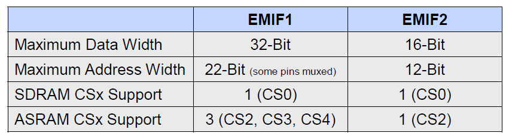
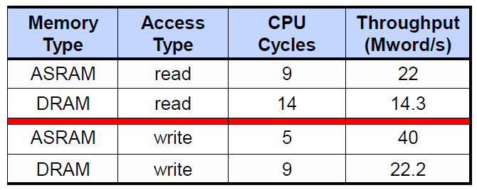

External Memory Interface (EMIF)#
When an application requires more memory than what is available on-chip, the EMIF controller can be used to connect to external memory devices. It provides a means for the CPU, DMA, and CLA to connect to synchronous (SDRAM) and asynchronous (SRAM, NOR Flash) memories. EMIF can also be used to interface with FPGAs. Note that EMIF is a different peripheral compared to EPI and XINTF that are featured on some older C2000 devices.
Devices that feature dual-core architecture support two EMIF modules (EMIF1 and EMIF2) in order to have a dedicated EMIF for each CPU subsystem. Both modules are identical but have different address/data-bus sizes. EMIF1 is shared between the CPU1 and CPU2, whereas EMIF2 is dedicated to the CPU1 subsystem. Either CPU can claim the controller ownership for EMIF1 by configuring the EMIF1MSEL register. On devices with two EMIF modules, both can be used in parallel, with some constraints. The EMIF modules contain Address, Data, Clock, Chip-select (CS) and Read/Write signals.
To summarize, the F2837xD and F2838x devices include two EMIFs:
EMIF1 - 16/32-bit interface that can be assigned to CPU1 or CPU2
EMIF2 - 16-bit interface dedicated to CPU1
EMIF features#
Each EMIF supports SRAM or SDRAM interface.
EMIF1 supports 32-bit data bus whereas EMIF2 supports 16-bit data bus (max). Note that the upper 16-bits (31:16) of EMIF1 data bus is multiplexed with the EMIF2 data bus (15:0).
Memory protection logic to protect the data from getting corrupted by other controllers.
Support of multiplexing the SRAM and SDRAM accesses.
Memory interface supports contiguous memory access independent of data bus width, thus enabling code execution directly from SRAM.
Each EMIF module has a finite number of address pins available for encoding.
Support for multiple Chip-select (CS) signals.
Each CS has an independent set of registers that must be configured before accessing the attached memory.
Each CS signal is assigned to a bounded range of 16-bit word addresses that cannot be changed and will automatically assert during read and write operations to that address space.
Each CS space supports only one type of interface (asynchronous or synchronous)
Memory Protection#
EMIF1: Once controller ownership is grabbed by a CPUx subsystem, user can further enable/disable following accesses by configuring EMIF1ACCPROT register.
CPU_FETCH_PROT: Disables CPU fetch from external memory if set to ‘1’.
CPU_WR_PROT : Disables CPU writes to external memory if set to ‘1’.
DMA_WR_PROT : Disables DMA writes to external memory if set to ‘1’.
EMIF2: EMIF2 is only accessible by CPU1 subsystem (CPU1/CPU1.CLA1). User can further enable/disable following access by configuring EMIF2ACCPROT register.
CPU_FETCH_PROT: Disables CPU fetch from external memory if set to ‘1’.
CPU_WR_PROT : Disables CPU writes to external memory if set to ‘1’.
Asynchronous (SRAM and NOR Flash) Memory Support#
EMIF1 supports 32-bit data bus. EMIF2 supports only 16-bit data bus.
EMIF1 supports up to 3 -CS signals (-CS2, -CS3 & -CS4) and EMIF2 supports 1 (-CS2).
Address on A[x:0] is always 32-bit address. BA[1:0] are used for byte/16-bit address.
Including Bank address (BA[1:0]), EMIF1 can support up to 22 address lines and EMIF2, up to 13 address lines.
Programmable read and write cycle timings. Each CS has dedicated configuration registers and hence can have different configurations for SETUP/STROBE/HOLD timings.
Zero turnaround time between “WR to WR” and “RD to RD” for same CSx and 1 cycle turnaround for different CSx.
Configurable memory size (8-bit/16-bit/32-bit).
External “Wait” input for slower memories. Extended Wait option with programmable timeout
Supports “Normal Strobe Mode” as well as “Select Strobe Mode” (CSx toggles as strobe).
Supports program execution as well as data access from each CPU (CPU1.CLA1 has only data access - no execution).
Supports for up to 200 MHz EMIF CLK (Full Speed).
Synchronous (SDRAM) Memory Support#
EMIF1 supports 32-bit data bus. EMIF2 supports only 16-bit data bus.
Support of 1 CSx (-CS0) on each EMIF.
EMIF1 can support up to 13 address lines and EMIF2, up to 12 address lines.
One, two, and four banks of SDRAM
Devices with eight, nine, ten, and eleven column address
Supports CAS latency of 2 or 3 clock cycles (configurable).
Supports up to 100 MHz operations.
Configurable memory size (8-bit/16-bit/32-bit).
Provides flexibility through programmable parameters such as the refresh rate, CAS latency, and many other SDRAM timings.
Supports only data access from CPUx/CPU1.CLA1.
Self-refresh and power-down modes
POWERDOWN (pre-charged powerdown) command which can be used for low power mode.

Configurations for EMIF#

Note:
In the figure above, the maximum address width on EMIF2 is 12-bit for F28379D and 13-bit for F2838xD
EMIF Performance#
The content below assumes a SYSCLK of 200MHz

Notes#
A ‘word’ can be a 16-or 32-bit access
ASRAM assumed to have ta(A) of 10 or 12 ns (access time)
ASRAM read setup/strobe/hold timings are 1/4/1, add 2 cycles bus start, 1 cycle data latency to CPU; 9 cycles (successive reads that are back-to-back do not incur the 1 cycle data latency, so 8 * N+1 cycles for N repeat transfers)
ASRAM write setup/strobe/hold timings are 1/1/1, add 2 cycles bus start ; 5 cycles
ASRAM read assumes ta(OE); 5 ns (This is typical for 10 or 12 ns ASRAM)
DRAM read, 100 MHz DRAM ; 14 cycles
DRAM write, 100 MHz DRAM; 9 cycles
Resources#
Feedback
Please provide any feedback you may have about the content within C2000 Academy to: c2000_academy_feedback@list.ti.com